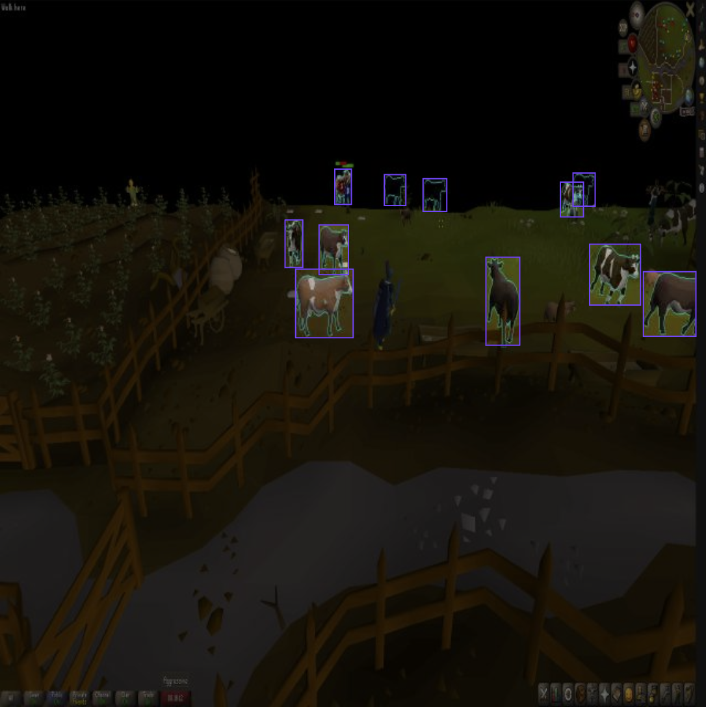
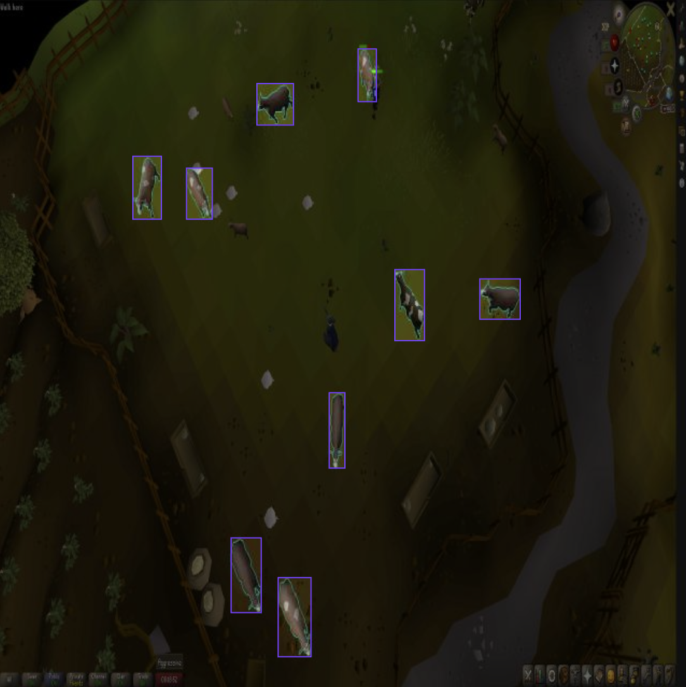
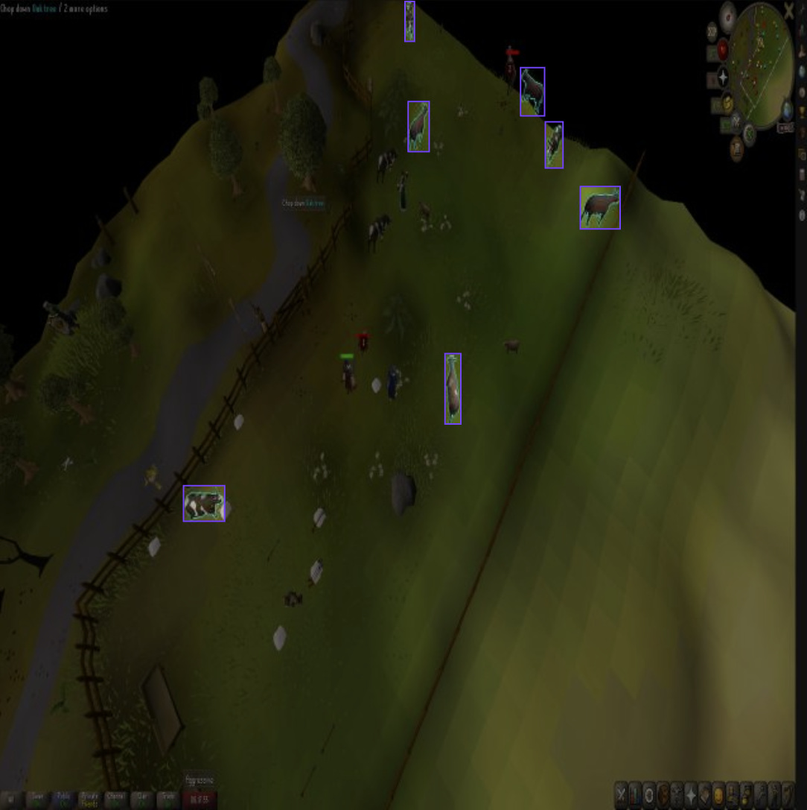

Computer Vision Project
A real-time computer vision experiment using YOLOv8 to detect cows from RuneLite gameplay screenshots. The system captures the game window, runs object detection, displays annotated predictions, and can target the nearest detected cow through automated click logic.
The project uses a custom-trained YOLOv8 model to perform real-time object detection on live gameplay. A multiprocessing pipeline handles frame capture, inference, display rendering, and automated interaction independently for improved responsiveness and performance.
The model was trained on a custom Roboflow dataset containing 402 annotated gameplay screenshots, split into 282 training images, 80 validation images, and 40 test images. Images were resized to 640×640 and manually labeled for cow detection.


